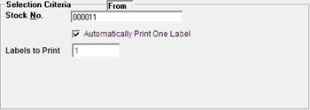

To scan the items, for which the labels are to be printed.

Stock No.: Scan/ enter the stock number for which the label has to be printed. Press Enter to print the label, if only one label is required. Press Tab to modify the number of labels to be printed.
Automatically Print One Label: Selected by default to print only one label for the selected stock number. Unselect if you want to print more than one label.
Labels to Print: Default value is one. If you have unselected Automatically Print One Label, enter the number of labels to be printed and press Enter. The selected stock details will be displayed under Selected Item and the label/s will be printed.